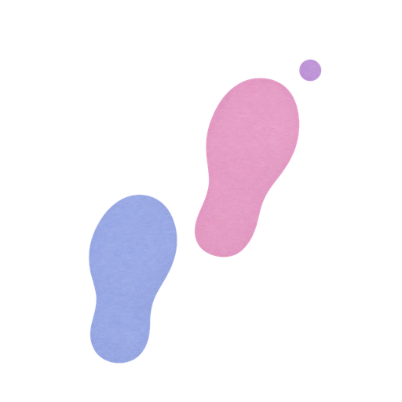
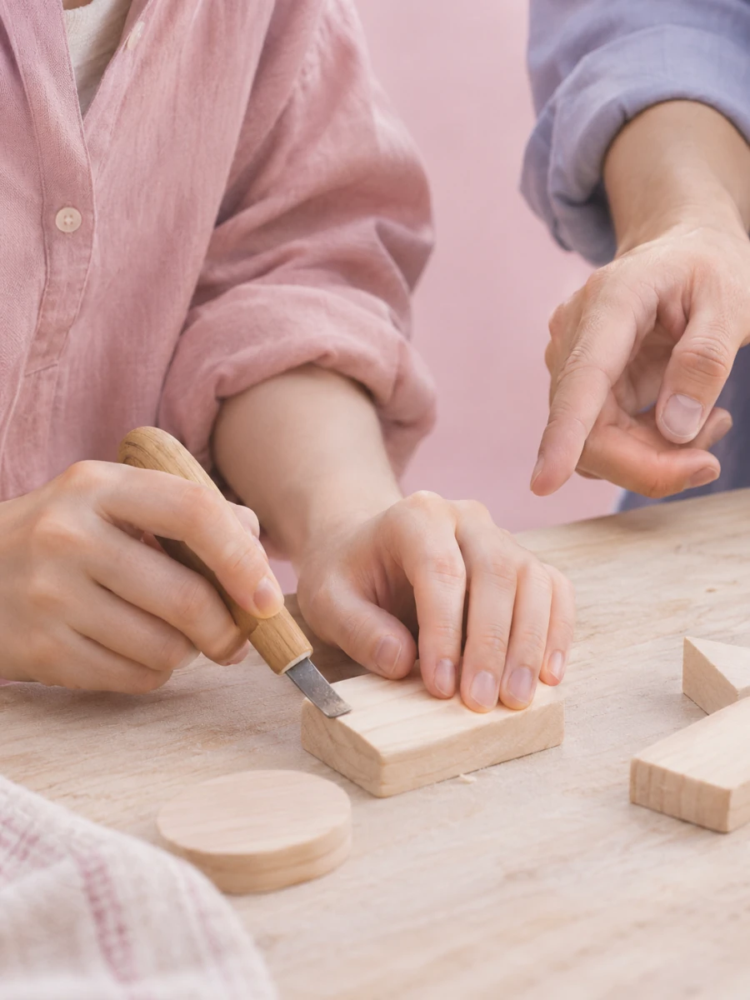
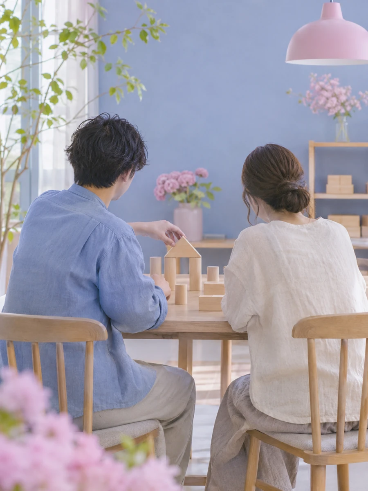
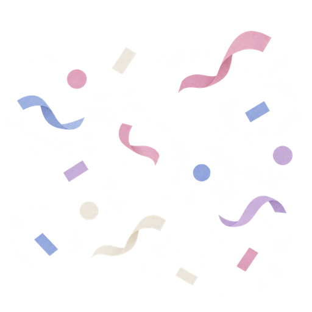

はじめての仕事さがし
未経験でも、仕事を探す最初の一歩を。
何を選べばいいかわからなくても。写真を見て選ぶだけの診断から、始めてみませんか。
経験や資格を書く欄はありません。40枚の画像をスワイプして答えます。
診断をはじめる
- 40枚をスワイプ
- 約2分
- 全16タイプ
- 無料
最初の気持ち
何から始めればいいか、わからない。
それは、よくあることです。仕事の名前が浮かばなくても、考え始める方法はあります。

選びかた
職業名ではなく、写真で。
気になる写真を選ぶだけ。経験や資格を書く欄はありません。
写真は仕事選びを考えるためのイメージです。実際の診断画像ではありません。



診断のしくみ
40枚の画像を、スワイプ。
約2分。結果は全16タイプのなかから見えてきます。
結果は、仕事選びの参考情報です。

くるっとまわって
最初の一歩は、スマホの中に。
診断は、スマホでそのまま。アプリを入れる必要もありません。

はじめる前に
よくある質問
はじめての方が気になることを、まとめました。
未経験でも診断は受けられますか？
はい。経験や資格を入力する欄はありません。40枚の画像をスワイプして答えます。
本当に無料ですか？
はい、診断は無料で受けられます。
どのくらい時間がかかりますか？
所要時間の目安は約2分です。結果は16タイプで示されます。
診断結果で仕事は決まりますか？
結果だけで仕事を決めることはおすすめしません。仕事選びの手がかりのひとつとして、これまでの経験や希望する働き方と照らし合わせて使ってください。
このページで選んだ内容は保存されますか？
このページには回答欄はありません。このページ上の操作が保存・送信されることはありません。診断は「診断をはじめる」から進みます。
診断のあと、相談はできますか？
はい。診断のあと、公式LINEから、無料で転職の相談ができます。